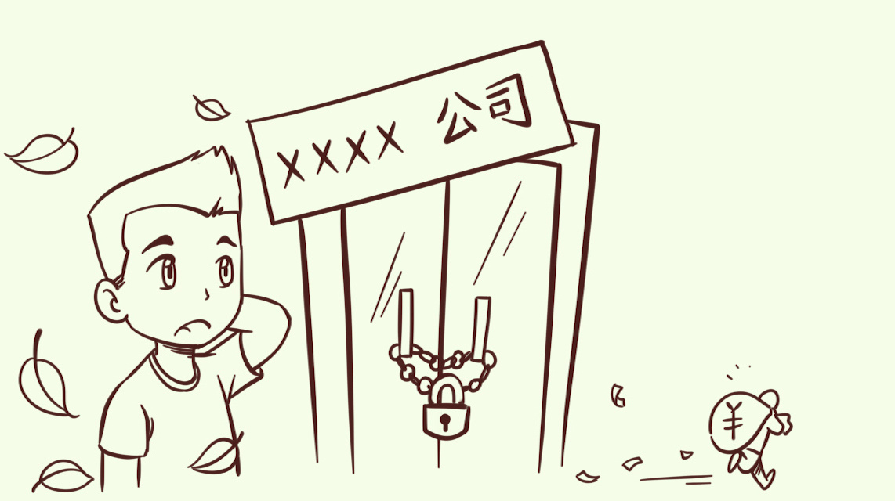
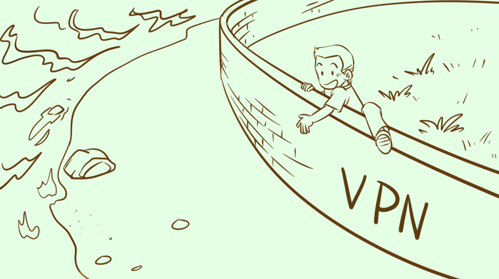

- 00 开篇词 这年头，你真应该懂点法律常识.md
- 01 “老周，我想知道” 常见法律认知盲区（一）.md
- 02 “老周，我想知道” 律师就在你身边（二）.md
- 03 “老周，我想知道” 律师就在你身边（三）.md
- 04 “老周，我想知道” 律师就在你身边（四）.md
- 05 创业未捷老板跑，社保工资哪里讨？.md
- 06 保密还是“卖身”，霸王条款怎么看？.md
- 07 编造流言蹭热度？看守所里降温度！.md
- 08 合同在手欠款难收，报警有用吗？.md
- 09 致创业：谁动了我的股权？.md
- 10 又见猝死！工“殇”究竟是不是工伤？.md
- 11 期权的“前世今生”.md
- 12 裁员面前，你能做的还有什么？.md
- 13 抄袭、盗图为什么做不得？.md
- 14 加班、工资、休假，你知道多少？.md
- 15 受贿原来这么“容易”.md
- 16 今天你用“VPN”了吗？.md
- 17 漏洞在眼前，可以悄悄破解吗？.md
- 18 “爬虫”真的合法吗？.md
- 19 非法集资到底是个啥？.md
- 20 黄色网站？不仅仅是“黄色”罪名.md
- 21 谁修改了我的积分资产？.md
- 22 外挂真能大吉大利吗？.md
- 23 如何看待“从删库到跑路”？.md
- 24 “伪基站”是你的避风港吗？.md
- 25 “网络诈骗”真的离你很远吗？.md
- 26 智斗中介：“北上广”租房图鉴.md
- 27 买买买！买房的“避坑”指南.md
- 28 闪婚又闪离，彩礼怎么理？.md
- 29 离婚还想和平？你要这么做.md
- 30 遗产继承的爱恨情仇.md
- 31 骗术升级？假结婚、假离婚的那些事儿.md
- 32 孩子学校受伤，谁之过？.md
- 33 如何让欠债还钱真正“天经地义”？.md
- 34 从透支到盗刷：人人须知的银行卡纠纷.md
- 35 远离“套路贷”的套路大全.md
- 36 危险！酒驾为什么被罚那么重？.md
- 37 老人倒地，“扶”“不服”？.md
- 38 “能动手就别吵吵”，代价你真的知道吗？.md
- 39 发生交通事故，如何处理？.md
- 40 交通事故综合法宝.md
- 41 婚姻家庭综合法宝.md
- 42 买卖房屋综合法宝.md
- 一键直达 法律专栏“食用”指南.md
- 加餐 “新冠肺炎”影响下，17个常见法律问题解答.md
- 结束语 法律，不会终止的篇章.md
00 开篇词 这年头，你真应该懂点法律常识
你好，我是周甲德，是北京市京师律师事务所的一名律师，你可以叫我老周。工作十年，我办过大大小小一百多起案件，杀人放火的、骗财骗色的，各种或奇葩或惊悚的事儿都没少见。按理来说经历过这么多，人的心态应该很“淡定”。但是，一年前的一条新闻还是震惊到了我，这也是我接受“极客时间”的邀请来写这个专栏的原因。
你大概猜到了是哪个新闻，没错，就是技术圈有名的WePhone开发者苏享茂事件。苏享茂是一名创业的程序员，因为跟前妻离婚被索要了巨额钱财，同时公司的资金链断裂，不堪重负跳楼自杀。这个案件本身很普通，但让我震惊的是，像苏享茂这样的技术人才，却丝毫不懂法。
我甚至怀疑他没有咨询过律师，不然他起码了解前妻的要求是否有法律依据，也会知道，即使一个人做了错事犯了法，也只有法律才有定罪的资格。如果他稍微有点法律意识，可能就是另外一个结局，起码不用付出生命的代价。
如果觉得这个话题太沉重，再看看下面的新闻，是不是你非常熟悉的情节？
程序员非法出售VPN，被判刑三年并罚款一万
男子卖“绝地求生”外挂月入数万，最后却被抓
腾讯23岁工程师检查酒店WiFi漏洞，被新加坡安全局逮捕
你看，这些事情触目惊心，并不是因为事件本身多恶劣、罪名多严重，而是这些都是你习以为常的“小事”！你不以为意，承担后果时才唏嘘不已！
每当发生这样的事情，媒体上就会有各种“技术人单纯”的言论。作为一名律师，我看到的其实是大多数人都没有基本的法律常识，甚至是精英的技术人也不例外。
别等到身陷囹圄或人财两空才后悔，预防永远是上乘之选。事实上，法律作为一种底层能力，最重要的价值正是风险防范。事想到前头做，话想到前面说，就更容易有好结果。但要做到这些并不容易，是需要懂点法律、有点风险意识的。
你是不是这么想过，我又不去招惹是非，一直本本份份，法与我何关？我想和你说，法律就在我们每个人生活中，一呼一吸都关乎法律。

比如在刚入职签劳动合同时，我会仔细阅读工资待遇、五险一金和保密事项等内容，因为我清楚，一旦落笔，这张纸便成了我板上钉钉的法律责任，即使有不合理的地方也得认了。
再如租房时，我会查清楚中介的资质和房东的手续，正式入住之前也会记录好所有大件物品的交接，然后严肃对待租房合同，这样在出问题时，才知道怎么保护自己的利益。

哪怕是我身边做技术的朋友，也会死死记住不去碰一些“雷区”，像是给私人建设黄色网站、帮人搭建套现平台这些活儿，甚至只是“爬虫”获取一些数据信息，他们也会注意不能“过了线”。因为我平常总强调相关罪行的具体场景和后果界定，他们也就记住了。
这些都是懂点法、有风险意识的具体体现，也是专栏中我想要教给你、让你能做到的东西。我选取了职场上、技术上和生活中的40多个经典场景，结合自已多年的执业经验和感受，把我见过的“雷区”和解决手段都告诉你，让你尽可能不走或少走法律的弯路。我们一起，从现实场景出发，再回到现实的风险意识和解决方案。
你不用害怕会有晦涩的法律条文，这其实是一个认识误区，很多人都以为学法就是去背数不清又难懂的法律条文。其实，对于大多数人来说，这完全没有必要。实际上，你需要学的是法律常识，是法律在日常的应用。这些东西，我会用最直白的语言和真实的案例来讲，保证你能轻松学懂、会用。
另外每天学习结束，我会给你留一个思考题，帮你加深对内容的印象，同时也是为了让留言区成为我们交流的平台。除了回答问题，我还希望你有更多的想法，比如可以总结你的学习笔记，分享你的某些故事，或是对某句话、某个观点的感触，你都可以记录下来。你还可以写下你的疑惑，提出最关心的法律问题，我也会抽空回复你。
参与、思考并输出，才是学习的最佳途径。这样，“我的”才可以内化成“你的”。
说了这么多，其实我的目的很简单，那就是希望你学完这个专栏后，可以解锁这三个成就：
了解法律常识，有风险防范意识；
会用法律思维处理问题，不走弯路；
做到“我不坑人，不被人坑”。
这是我的期许，在正式开始学习之前也很想听听你的声音，你觉得法律和自己的关系是怎样的？有没有什么问题或者困惑，希望可以咨询律师呢？你都可以给我留言。
我很喜欢一句话，上帝只救自救之人。我不希望你坑人或是被人坑，只想让法律给你生存底气，成为保护你的“三级盔甲”。接下来，就让我们一起为你组装专属的法律盔甲吧！
© 2019 - 2023 Liangliang Lee. Powered by gin and hexo-theme-book.